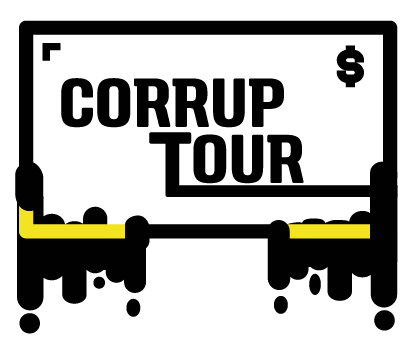

Elecciones Congreso 2018
El Corruptour es un proyecto innvovador de movilización ciudadana contra la corrupción. Es un recorrido en una chiva por los principales lugares emblemáticos de la corrupción en Bogotá. La chiva transporta a cualquier ciudadano interesado en visualizar y entender mejor las repercusiones del fenómeno.